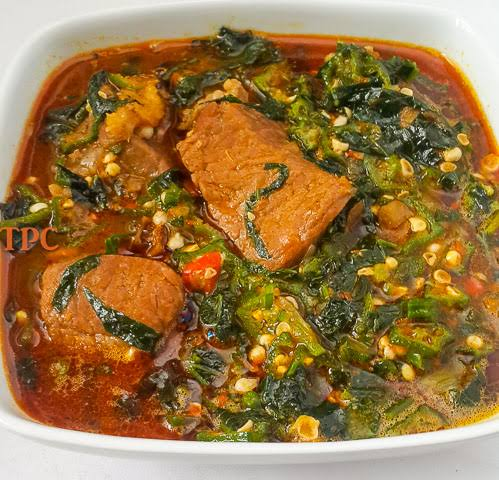
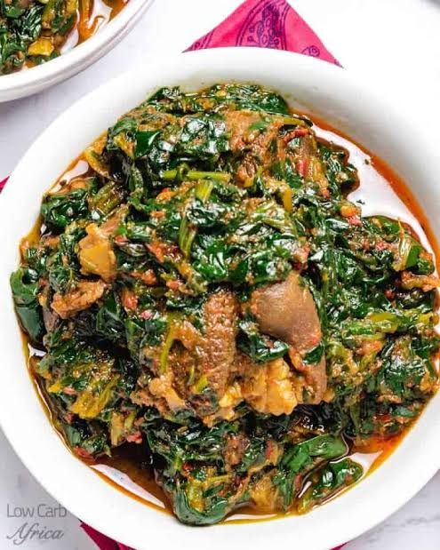
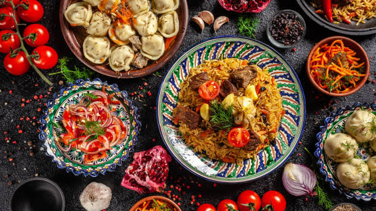
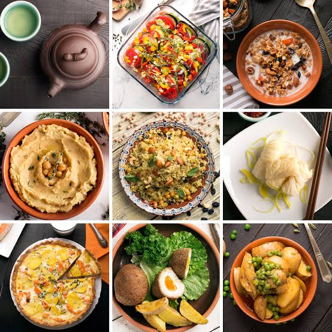

Some Delicacies?
"If you believe nothing is impossible.." -Tonysmile
I am Ugwuja Anthony Chinedu, an undergraduate of the university of Nigeria Nsukka. I'm on my journey of becoming a React Developer. why I like FoodPhotoApp is that i get all the photos of my favourite meal there


Chicken Pepper Soup
Get it Here